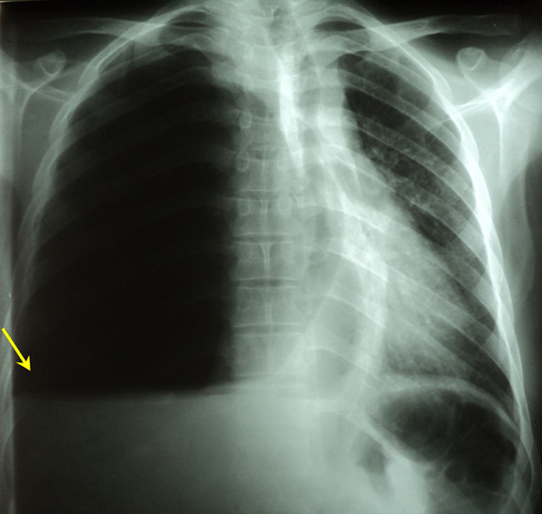

Réponses cas clinique N°54
1- La radiographie thoracique de face montre une opacité basale droite dense homogène de tonalité hydrique comblant le cul de sac costo-diaphragmatique droit surmontée par une hyper-clarté avasculaire prenant tout le reste de l'hémithorax droit dont elle est séparée par un niveau horizontal (niveau hydro-aérique) et refoulant les éléments du médiastin à gauche= Aspect d’hydropneumothorax droit (flèche).
2- Devant l'âge jeune du patient, l'altération de l’état général, le contexte infectieux, l'aspect radiologique et le liquide purulent à la ponction pleurale on suspecte un pyopneumothorax d'origine tuberculeuse ou à germes pyogènes.
3- Devant un pyopneumothorax, après une ponction pleurale on complète notre geste par un drainage thoracique avec des prélévements du liquide pleural à visée bactériologique avec recherche de BK par examen direct et culture et recherche de germes banaux.
Le contrôle clinique et radiologique post drainage est systématique pour s’assurer de la bonne localisation du drain et pour rechercher des lésions pulmonaires sous-jacentes.
Un traitement antibiotique à large spectre doit être prescrit systématiquement associant : ampicilline, gentamycine et metronidazole.
Une kinésithérapie respiratoire doit être également pratiquée.
Le traitement étiologique sera adapté en fonction des résultats du bilan.
